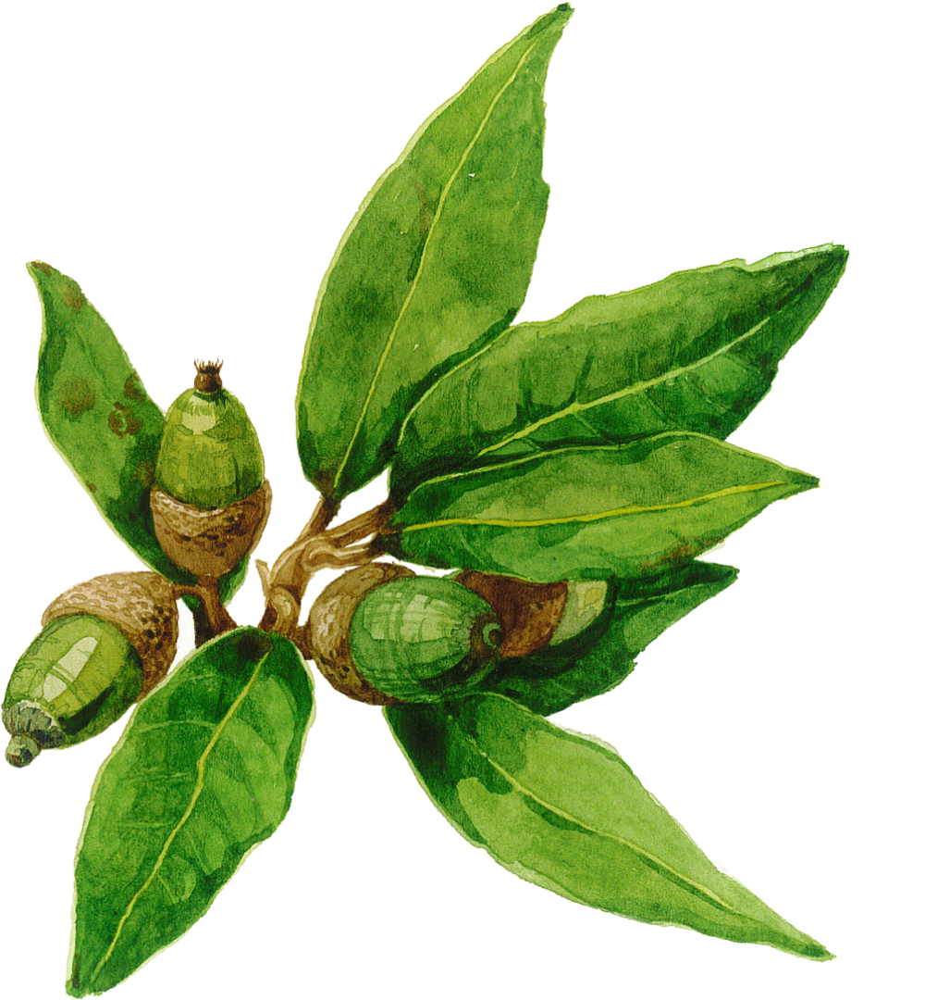
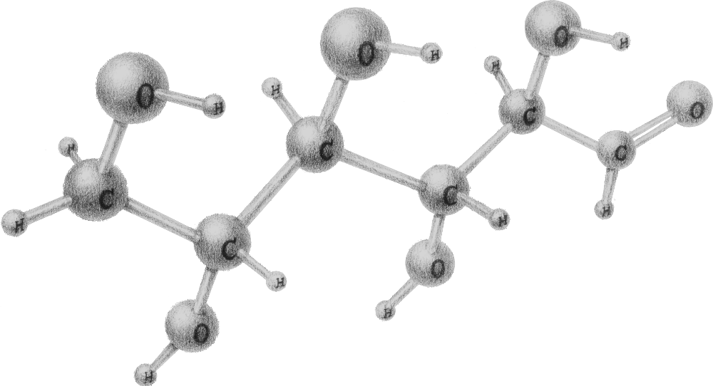

the green light
fluorescens — for the green pigment pyoverdine it pours out to scavenge iron, glowing under ultraviolet light.


The fluorescent pseudomonads are the most studied biocontrol bacteria on Earth; whole natural disease-suppressions of wheat and tobacco have been traced back to the DAPG they make. In the montado, strains antagonistic to P. cinnamomi are being read as a model for the same defence.
More than fifty species are now folded into the P. fluorescens complex, most at home at 25–30 °C — the montado's mild, wet season. It holds pathogens back in four independent ways, chief among them DAPG, the antibiotic behind entire natural disease-suppressive soils.
.JPG?width=1000)

Phytophthora
- It competes with the pathogen in the rhizosphere
- DAPG and other antibiotics behind suppressive soils
- A strain antagonistic to P. cinnamomi

Oak
- It protects the oak's roots
- And primes the tree's own immunity
- Suppression a whole living soil does for free

Glucose
- Fed by sugars the oak leaks from its roots
- Drawn to gather at the root
- Fuel for its defence of the tree